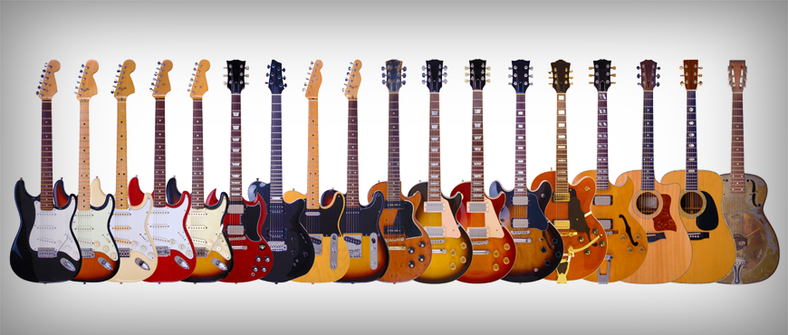

Guitar World
Find Your Sound
Are you interested in buying a guitar? Well, you are in the right place! Guitar World is a premium online store dedicated to selling high-quality guitars and accessories for musicians of all skill levels. Offering a diverse selection of electric, acoustic, and bass guitars, as well as essential accessories like strings, amps, and pedals, Guitar World is a one-stop shop for all your musical needs. Whether you're a seasoned professional or just starting your musical journey, the site provides top-notch products and expert advice to help you find the perfect gear to enhance your sound.
Choose From Over 1000 Styles
We have the largest selection in the world. With all of the styles that we carry, you are guaranteed to find one that you'll love. Some of our styles include:
- Electic Guitars
- Acoustic Guitars
- Bass Guitars
- Ukuleles
We even carry lefty versions of all of our instruments so that way everyone can learn and jam out with their friends.